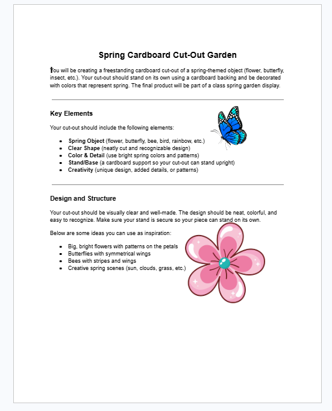
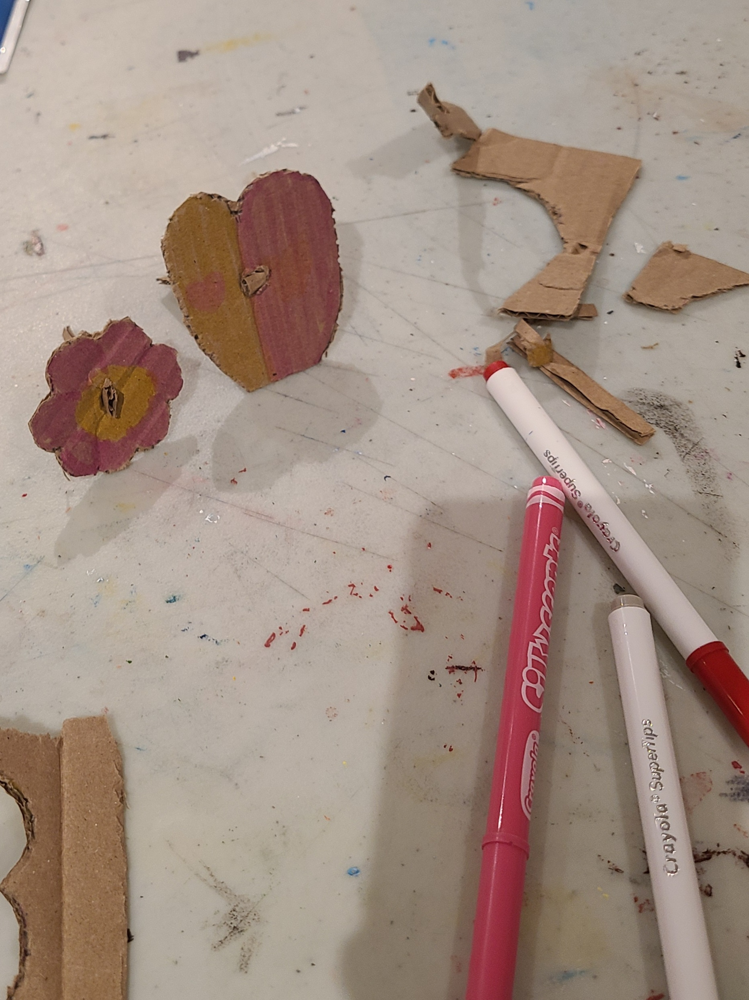
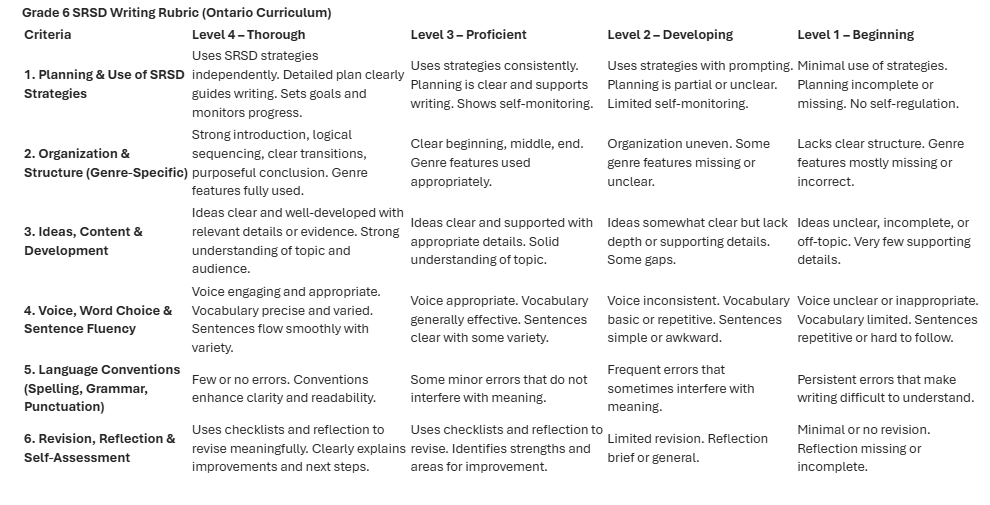

🌸 Spring Cardboard Cut-Out Garden – Creative Expression
These artifacts showcase student work from a hands-on spring art activity. Students created freestanding cardboard cut-outs of spring-themed objects. The first item is the instruction sheet given to students, outlining expectations. The second will be an example of student-created work.
① the thingProject instructions – Spring cut-out garden
This is the handout provided to students, detailing the expectations for creating a spring-themed cardboard cut-out. Students were asked to design, decorate, and construct a freestanding piece to contribute to a collaborative classroom display.

① the thingStudent cut-out example (to be added)
This will show a student’s completed spring cut-out, demonstrating creativity, use of color, and ability to construct a freestanding design.

📋 Student Self-Reflection Rubric
To help students take ownership of their learning, I co-constructed a rubric with the class for reflecting on their written work. This rubric guides students in assessing their own writing and setting goals for improvement.
① the thingSelf-reflection rubric – writing
Students used this tool after completing a writing assignment. The rubric includes criteria for content, organization, and voice, with spaces for student comments and next steps.

⬇️ each entry follows: thing · artifact · impact — organised by reflection type.